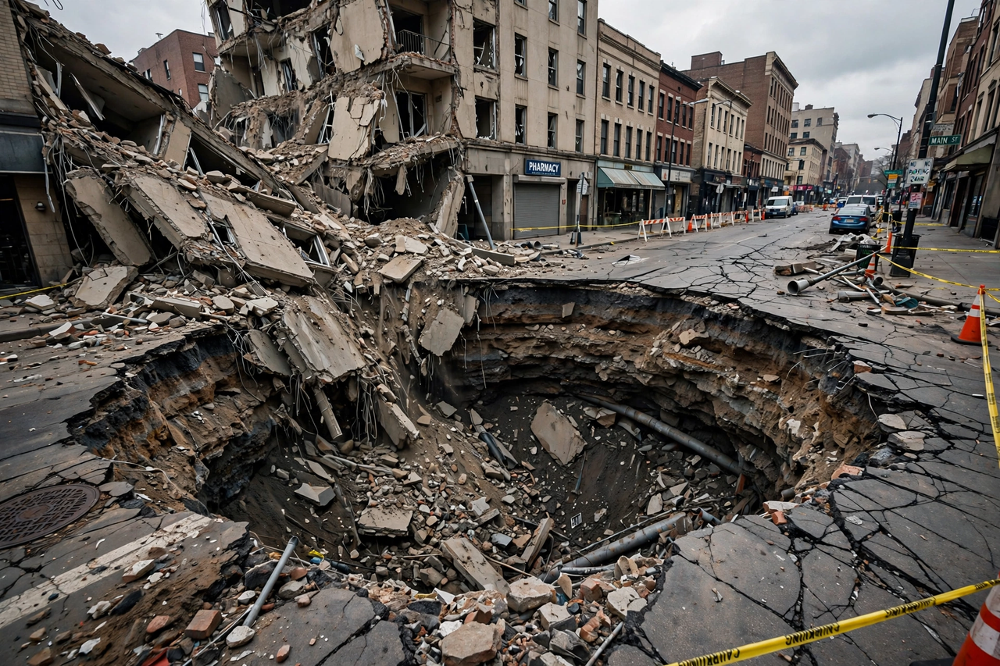

Sinkhole

A sinkhole is a depression or hole in the ground caused by the collapse of a surface layer into an underground void. Most sinkholes form in karst terrain, where slightly acidic groundwater has dissolved limestone, dolomite or gypsum over thousands of years, leaving caverns whose roofs eventually fail.
Sinkholes range from gentle, metre-wide bowls to chasms that swallow houses and streets in seconds.
Formation
In cover-collapse sinkholes — the sudden, newsworthy kind common in Florida — sandy soil arches over a cavity in the limestone below until the arch gives way, often after drought lowers the water table or heavy rain and pumping change groundwater pressures. Dissolution sinkholes form gradually at the surface; in regions like China's Guangxi and the Yucatán (whose ring of cenotes traces the buried Chicxulub crater rim) they are defining landscape features.
Human activity triggers many collapses: groundwater pumping, construction loading, leaking pipes, and mining. 'Pseudokarst' collapses over old mines and buried infrastructure mimic natural sinkholes.
Risk and response
Florida, with its limestone platform and development pressure, is the most sinkhole-prone US state; catastrophic-collapse deaths are rare but property losses are large. Mitigation uses geophysical surveys before construction, grouting and underpinning of foundations, and regulation of groundwater withdrawals. See {L('Geology')} and {L('Hydrology')}.
See also: Geology · Hydrology · Natural disaster · Groundwater